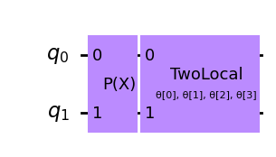
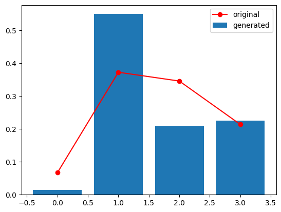

<!DOCTYPE html>


<html lang="en" >

  <head>
    <meta charset="utf-8" />
    <meta name="viewport" content="width=device-width, initial-scale=1.0" /><meta name="generator" content="Docutils 0.18.1: http://docutils.sourceforge.net/" />

    <title>Quantum GANs &#8212; IBM Community Japan 2023 ナレッジモール研究会</title>
  
  
  
  <script data-cfasync="false">
    document.documentElement.dataset.mode = localStorage.getItem("mode") || "";
    document.documentElement.dataset.theme = localStorage.getItem("theme") || "light";
  </script>
  
  <!-- Loaded before other Sphinx assets -->
  <link href="../_static/styles/theme.css?digest=e353d410970836974a52" rel="stylesheet" />
<link href="../_static/styles/bootstrap.css?digest=e353d410970836974a52" rel="stylesheet" />
<link href="../_static/styles/pydata-sphinx-theme.css?digest=e353d410970836974a52" rel="stylesheet" />

  
  <link href="../_static/vendor/fontawesome/6.1.2/css/all.min.css?digest=e353d410970836974a52" rel="stylesheet" />
  <link rel="preload" as="font" type="font/woff2" crossorigin href="../_static/vendor/fontawesome/6.1.2/webfonts/fa-solid-900.woff2" />
<link rel="preload" as="font" type="font/woff2" crossorigin href="../_static/vendor/fontawesome/6.1.2/webfonts/fa-brands-400.woff2" />
<link rel="preload" as="font" type="font/woff2" crossorigin href="../_static/vendor/fontawesome/6.1.2/webfonts/fa-regular-400.woff2" />

    <link rel="stylesheet" type="text/css" href="../_static/pygments.css" />
    <link rel="stylesheet" href="../_static/styles/sphinx-book-theme.css?digest=14f4ca6b54d191a8c7657f6c759bf11a5fb86285" type="text/css" />
    <link rel="stylesheet" type="text/css" href="../_static/togglebutton.css" />
    <link rel="stylesheet" type="text/css" href="../_static/copybutton.css" />
    <link rel="stylesheet" type="text/css" href="../_static/mystnb.4510f1fc1dee50b3e5859aac5469c37c29e427902b24a333a5f9fcb2f0b3ac41.css" />
    <link rel="stylesheet" type="text/css" href="../_static/sphinx-thebe.css" />
    <link rel="stylesheet" type="text/css" href="../_static/design-style.4045f2051d55cab465a707391d5b2007.min.css" />
  
  <!-- Pre-loaded scripts that we'll load fully later -->
  <link rel="preload" as="script" href="../_static/scripts/bootstrap.js?digest=e353d410970836974a52" />
<link rel="preload" as="script" href="../_static/scripts/pydata-sphinx-theme.js?digest=e353d410970836974a52" />

    <script data-url_root="../" id="documentation_options" src="../_static/documentation_options.js"></script>
    <script src="../_static/jquery.js"></script>
    <script src="../_static/underscore.js"></script>
    <script src="../_static/_sphinx_javascript_frameworks_compat.js"></script>
    <script src="../_static/doctools.js"></script>
    <script src="../_static/clipboard.min.js"></script>
    <script src="../_static/copybutton.js"></script>
    <script src="../_static/scripts/sphinx-book-theme.js?digest=5a5c038af52cf7bc1a1ec88eea08e6366ee68824"></script>
    <script>let toggleHintShow = 'Click to show';</script>
    <script>let toggleHintHide = 'Click to hide';</script>
    <script>let toggleOpenOnPrint = 'true';</script>
    <script src="../_static/togglebutton.js"></script>
    <script>var togglebuttonSelector = '.toggle, .admonition.dropdown';</script>
    <script src="../_static/design-tabs.js"></script>
    <script>const THEBE_JS_URL = "https://unpkg.com/thebe@0.8.2/lib/index.js"
const thebe_selector = ".thebe,.cell"
const thebe_selector_input = "pre"
const thebe_selector_output = ".output, .cell_output"
</script>
    <script async="async" src="../_static/sphinx-thebe.js"></script>
    <script>DOCUMENTATION_OPTIONS.pagename = 'team_a/3_ibm_quiskit_tutorial';</script>
    <link rel="index" title="Index" href="../genindex.html" />
    <link rel="search" title="Search" href="../search.html" />
  <meta name="viewport" content="width=device-width, initial-scale=1"/>
  <meta name="docsearch:language" content="en"/>
  </head>
  
  
  <body data-bs-spy="scroll" data-bs-target=".bd-toc-nav" data-offset="180" data-bs-root-margin="0px 0px -60%" data-default-mode="">

  
  
  <a class="skip-link" href="#main-content">Skip to main content</a>
  
  <input type="checkbox"
          class="sidebar-toggle"
          name="__primary"
          id="__primary"/>
  <label class="overlay overlay-primary" for="__primary"></label>
  
  <input type="checkbox"
          class="sidebar-toggle"
          name="__secondary"
          id="__secondary"/>
  <label class="overlay overlay-secondary" for="__secondary"></label>
  
  <div class="search-button__wrapper">
    <div class="search-button__overlay"></div>
    <div class="search-button__search-container">
<form class="bd-search d-flex align-items-center"
      action="../search.html"
      method="get">
  <i class="fa-solid fa-magnifying-glass"></i>
  <input type="search"
         class="form-control"
         name="q"
         id="search-input"
         placeholder="Search this book..."
         aria-label="Search this book..."
         autocomplete="off"
         autocorrect="off"
         autocapitalize="off"
         spellcheck="false"/>
  <span class="search-button__kbd-shortcut"><kbd class="kbd-shortcut__modifier">Ctrl</kbd>+<kbd>K</kbd></span>
</form></div>
  </div>
  
    <nav class="bd-header navbar navbar-expand-lg bd-navbar">
    </nav>
  
  <div class="bd-container">
    <div class="bd-container__inner bd-page-width">
      
      <div class="bd-sidebar-primary bd-sidebar">
        

  
  <div class="sidebar-header-items sidebar-primary__section">
    
    
    
    
  </div>
  
    <div class="sidebar-primary-items__start sidebar-primary__section">
        <div class="sidebar-primary-item">
  

<a class="navbar-brand logo" href="../intro.html">
  
  
  
  
    
    
      
    
    
    
    <script>document.write(``);</script>
  
  
</a></div>
        <div class="sidebar-primary-item"><nav class="bd-links" id="bd-docs-nav" aria-label="Main">
    <div class="bd-toc-item navbar-nav active">
        
        <ul class="nav bd-sidenav bd-sidenav__home-link">
            <li class="toctree-l1">
                <a class="reference internal" href="../intro.html">
                    量子コンピューターの活用研究
                </a>
            </li>
        </ul>
        <p aria-level="2" class="caption" role="heading"><span class="caption-text">コンテンツ</span></p>
<ul class="nav bd-sidenav">
<li class="toctree-l1"><a class="reference internal" href="../result_c.html">Cチーム結果</a></li>
<li class="toctree-l1"><a class="reference internal" href="../result_b.html">Bチーム結果 初学者の学習困難箇所や挑戦箇所の研究</a></li>
<li class="toctree-l1"><a class="reference internal" href="../result_a.html">量子機械学習</a></li>
</ul>

    </div>
</nav></div>
    </div>
  
  
  <div class="sidebar-primary-items__end sidebar-primary__section">
  </div>
  
  <div id="rtd-footer-container"></div>


      </div>
      
      <main id="main-content" class="bd-main">
        
        

<div class="sbt-scroll-pixel-helper"></div>

          <div class="bd-content">
            <div class="bd-article-container">
              
              <div class="bd-header-article">
<div class="header-article-items header-article__inner">
  
    <div class="header-article-items__start">
      
        <div class="header-article-item"><label class="sidebar-toggle primary-toggle btn btn-sm" for="__primary" title="Toggle primary sidebar" data-bs-placement="bottom" data-bs-toggle="tooltip">
  <span class="fa-solid fa-bars"></span>
</label></div>
      
    </div>
  
  
    <div class="header-article-items__end">
      
        <div class="header-article-item">

<div class="article-header-buttons">


<div class="dropdown dropdown-source-buttons">
  <button class="btn dropdown-toggle" type="button" data-bs-toggle="dropdown" aria-expanded="false" aria-label="Source repositories">
    <i class="fab fa-github"></i>
  </button>
  <ul class="dropdown-menu">
      
      
      
      <li><a href="https://github.com/wg-quantum/2023-b-07-a" target="_blank"
   class="btn btn-sm btn-source-repository-button dropdown-item"
   title="Source repository"
   data-bs-placement="left" data-bs-toggle="tooltip"
>
  

<span class="btn__icon-container">
  <i class="fab fa-github"></i>
  </span>
<span class="btn__text-container">Repository</span>
</a>
</li>
      
      
      
      
      <li><a href="https://github.com/wg-quantum/2023-b-07-a/issues/new?title=Issue%20on%20page%20%2Fteam_a/3_ibm_quiskit_tutorial.html&body=Your%20issue%20content%20here." target="_blank"
   class="btn btn-sm btn-source-issues-button dropdown-item"
   title="Open an issue"
   data-bs-placement="left" data-bs-toggle="tooltip"
>
  

<span class="btn__icon-container">
  <i class="fas fa-lightbulb"></i>
  </span>
<span class="btn__text-container">Open issue</span>
</a>
</li>
      
  </ul>
</div>


<div class="dropdown dropdown-download-buttons">
  <button class="btn dropdown-toggle" type="button" data-bs-toggle="dropdown" aria-expanded="false" aria-label="Download this page">
    <i class="fas fa-download"></i>
  </button>
  <ul class="dropdown-menu">
      
      
      
      <li><a href="../_sources/team_a/3_ibm_quiskit_tutorial.ipynb" target="_blank"
   class="btn btn-sm btn-download-source-button dropdown-item"
   title="Download source file"
   data-bs-placement="left" data-bs-toggle="tooltip"
>
  

<span class="btn__icon-container">
  <i class="fas fa-file"></i>
  </span>
<span class="btn__text-container">.ipynb</span>
</a>
</li>
      
      
      
      
      <li>
<button onclick="window.print()"
  class="btn btn-sm btn-download-pdf-button dropdown-item"
  title="Print to PDF"
  data-bs-placement="left" data-bs-toggle="tooltip"
>
  

<span class="btn__icon-container">
  <i class="fas fa-file-pdf"></i>
  </span>
<span class="btn__text-container">.pdf</span>
</button>
</li>
      
  </ul>
</div>


<button onclick="toggleFullScreen()"
  class="btn btn-sm btn-fullscreen-button"
  title="Fullscreen mode"
  data-bs-placement="bottom" data-bs-toggle="tooltip"
>
  

<span class="btn__icon-container">
  <i class="fas fa-expand"></i>
  </span>

</button>


<script>
document.write(`
  <button class="theme-switch-button btn btn-sm btn-outline-primary navbar-btn rounded-circle" title="light/dark" aria-label="light/dark" data-bs-placement="bottom" data-bs-toggle="tooltip">
    <span class="theme-switch" data-mode="light"><i class="fa-solid fa-sun"></i></span>
    <span class="theme-switch" data-mode="dark"><i class="fa-solid fa-moon"></i></span>
    <span class="theme-switch" data-mode="auto"><i class="fa-solid fa-circle-half-stroke"></i></span>
  </button>
`);
</script>

<script>
document.write(`
  <button class="btn btn-sm navbar-btn search-button search-button__button" title="Search" aria-label="Search" data-bs-placement="bottom" data-bs-toggle="tooltip">
    <i class="fa-solid fa-magnifying-glass"></i>
  </button>
`);
</script>
<label class="sidebar-toggle secondary-toggle btn btn-sm" for="__secondary"title="Toggle secondary sidebar" data-bs-placement="bottom" data-bs-toggle="tooltip">
    <span class="fa-solid fa-list"></span>
</label>
</div></div>
      
    </div>
  
</div>
</div>
              
              

<div id="jb-print-docs-body" class="onlyprint">
    <h1>Quantum GANs</h1>
    <!-- Table of contents -->
    <div id="print-main-content">
        <div id="jb-print-toc">
            
            <div>
                <h2> Contents </h2>
            </div>
            <nav aria-label="Page">
                <ul class="visible nav section-nav flex-column">
<li class="toc-h1 nav-item toc-entry"><a class="reference internal nav-link" href="#">Quantum GANs</a><ul class="visible nav section-nav flex-column">
<li class="toc-h2 nav-item toc-entry"><a class="reference internal nav-link" href="#reference">Reference</a></li>
</ul>
</li>
<li class="toc-h1 nav-item toc-entry"><a class="reference internal nav-link" href="#training">Training</a></li>
</ul>

            </nav>
        </div>
    </div>
</div>

              
                
<div id="searchbox"></div>
                <article class="bd-article" role="main">
                  
  <section id="quantum-gans">
<h1>Quantum GANs<a class="headerlink" href="#quantum-gans" title="Permalink to this heading">#</a></h1>
<p>In this tutorial, we will try to explore quantum GANs to generate original probability distribution.</p>
</br>
<section id="reference">
<h2>Reference<a class="headerlink" href="#reference" title="Permalink to this heading">#</a></h2>
<ul class="simple">
<li><p><a class="reference external" href="https://qiskit.org/ecosystem/machine-learning/stubs/qiskit_machine_learning.algorithms.QGAN.html">qiskit-tutrial</a></p></li>
<li><p><a class="reference external" href="https://github.com/qiskit-community/qiskit-machine-learning">github</a></p></li>
</ul>
<div class="cell docutils container">
<div class="cell_input docutils container">
<div class="highlight-ipython3 notranslate"><div class="highlight"><pre><span></span><span class="o">!</span><span class="w"> </span>pip<span class="w"> </span>install<span class="w"> </span><span class="nv">watermark</span><span class="o">==</span><span class="m">2</span>.4.2
<span class="o">!</span><span class="w"> </span>pip<span class="w"> </span>install<span class="w"> </span><span class="nv">pylatexenc</span><span class="o">==</span><span class="m">2</span>.10
</pre></div>
</div>
</div>
<div class="cell_output docutils container">
<div class="output stream highlight-myst-ansi notranslate"><div class="highlight"><pre><span></span>Requirement already satisfied: watermark==2.4.2 in /opt/hostedtoolcache/Python/3.8.18/x64/lib/python3.8/site-packages (2.4.2)
Requirement already satisfied: ipython&gt;=6.0 in /opt/hostedtoolcache/Python/3.8.18/x64/lib/python3.8/site-packages (from watermark==2.4.2) (8.12.2)
Requirement already satisfied: importlib-metadata&gt;=1.4 in /opt/hostedtoolcache/Python/3.8.18/x64/lib/python3.8/site-packages (from watermark==2.4.2) (6.8.0)
Requirement already satisfied: py3nvml&gt;=0.2 in /opt/hostedtoolcache/Python/3.8.18/x64/lib/python3.8/site-packages (from watermark==2.4.2) (0.2.7)
Requirement already satisfied: setuptools in /opt/hostedtoolcache/Python/3.8.18/x64/lib/python3.8/site-packages (from watermark==2.4.2) (56.0.0)
Requirement already satisfied: zipp&gt;=0.5 in /opt/hostedtoolcache/Python/3.8.18/x64/lib/python3.8/site-packages (from importlib-metadata&gt;=1.4-&gt;watermark==2.4.2) (3.16.2)
</pre></div>
</div>
<div class="output stream highlight-myst-ansi notranslate"><div class="highlight"><pre><span></span>Requirement already satisfied: backcall in /opt/hostedtoolcache/Python/3.8.18/x64/lib/python3.8/site-packages (from ipython&gt;=6.0-&gt;watermark==2.4.2) (0.2.0)
Requirement already satisfied: decorator in /opt/hostedtoolcache/Python/3.8.18/x64/lib/python3.8/site-packages (from ipython&gt;=6.0-&gt;watermark==2.4.2) (5.1.1)
Requirement already satisfied: jedi&gt;=0.16 in /opt/hostedtoolcache/Python/3.8.18/x64/lib/python3.8/site-packages (from ipython&gt;=6.0-&gt;watermark==2.4.2) (0.19.0)
Requirement already satisfied: matplotlib-inline in /opt/hostedtoolcache/Python/3.8.18/x64/lib/python3.8/site-packages (from ipython&gt;=6.0-&gt;watermark==2.4.2) (0.1.6)
Requirement already satisfied: pickleshare in /opt/hostedtoolcache/Python/3.8.18/x64/lib/python3.8/site-packages (from ipython&gt;=6.0-&gt;watermark==2.4.2) (0.7.5)
Requirement already satisfied: prompt-toolkit!=3.0.37,&lt;3.1.0,&gt;=3.0.30 in /opt/hostedtoolcache/Python/3.8.18/x64/lib/python3.8/site-packages (from ipython&gt;=6.0-&gt;watermark==2.4.2) (3.0.39)
Requirement already satisfied: pygments&gt;=2.4.0 in /opt/hostedtoolcache/Python/3.8.18/x64/lib/python3.8/site-packages (from ipython&gt;=6.0-&gt;watermark==2.4.2) (2.16.1)
Requirement already satisfied: stack-data in /opt/hostedtoolcache/Python/3.8.18/x64/lib/python3.8/site-packages (from ipython&gt;=6.0-&gt;watermark==2.4.2) (0.6.2)
Requirement already satisfied: traitlets&gt;=5 in /opt/hostedtoolcache/Python/3.8.18/x64/lib/python3.8/site-packages (from ipython&gt;=6.0-&gt;watermark==2.4.2) (5.9.0)
Requirement already satisfied: typing-extensions in /opt/hostedtoolcache/Python/3.8.18/x64/lib/python3.8/site-packages (from ipython&gt;=6.0-&gt;watermark==2.4.2) (4.7.1)
Requirement already satisfied: pexpect&gt;4.3 in /opt/hostedtoolcache/Python/3.8.18/x64/lib/python3.8/site-packages (from ipython&gt;=6.0-&gt;watermark==2.4.2) (4.8.0)
Requirement already satisfied: xmltodict in /opt/hostedtoolcache/Python/3.8.18/x64/lib/python3.8/site-packages (from py3nvml&gt;=0.2-&gt;watermark==2.4.2) (0.13.0)
</pre></div>
</div>
<div class="output stream highlight-myst-ansi notranslate"><div class="highlight"><pre><span></span>Requirement already satisfied: parso&lt;0.9.0,&gt;=0.8.3 in /opt/hostedtoolcache/Python/3.8.18/x64/lib/python3.8/site-packages (from jedi&gt;=0.16-&gt;ipython&gt;=6.0-&gt;watermark==2.4.2) (0.8.3)
Requirement already satisfied: ptyprocess&gt;=0.5 in /opt/hostedtoolcache/Python/3.8.18/x64/lib/python3.8/site-packages (from pexpect&gt;4.3-&gt;ipython&gt;=6.0-&gt;watermark==2.4.2) (0.7.0)
Requirement already satisfied: wcwidth in /opt/hostedtoolcache/Python/3.8.18/x64/lib/python3.8/site-packages (from prompt-toolkit!=3.0.37,&lt;3.1.0,&gt;=3.0.30-&gt;ipython&gt;=6.0-&gt;watermark==2.4.2) (0.2.6)
</pre></div>
</div>
<div class="output stream highlight-myst-ansi notranslate"><div class="highlight"><pre><span></span>Requirement already satisfied: executing&gt;=1.2.0 in /opt/hostedtoolcache/Python/3.8.18/x64/lib/python3.8/site-packages (from stack-data-&gt;ipython&gt;=6.0-&gt;watermark==2.4.2) (1.2.0)
Requirement already satisfied: asttokens&gt;=2.1.0 in /opt/hostedtoolcache/Python/3.8.18/x64/lib/python3.8/site-packages (from stack-data-&gt;ipython&gt;=6.0-&gt;watermark==2.4.2) (2.4.0)
Requirement already satisfied: pure-eval in /opt/hostedtoolcache/Python/3.8.18/x64/lib/python3.8/site-packages (from stack-data-&gt;ipython&gt;=6.0-&gt;watermark==2.4.2) (0.2.2)
Requirement already satisfied: six&gt;=1.12.0 in /opt/hostedtoolcache/Python/3.8.18/x64/lib/python3.8/site-packages (from asttokens&gt;=2.1.0-&gt;stack-data-&gt;ipython&gt;=6.0-&gt;watermark==2.4.2) (1.16.0)
</pre></div>
</div>
<div class="output stream highlight-myst-ansi notranslate"><div class="highlight"><pre><span></span><span class=" -Color -Color-Bold">[</span><span class=" -Color -Color-Blue">notice</span><span class=" -Color -Color-Bold">]</span> A new release of pip is available: <span class=" -Color -Color-Red">23.0.1</span> -&gt; <span class=" -Color -Color-Green">23.2.1</span>
<span class=" -Color -Color-Bold">[</span><span class=" -Color -Color-Blue">notice</span><span class=" -Color -Color-Bold">]</span> To update, run: <span class=" -Color -Color-Green">pip install --upgrade pip</span>
</pre></div>
</div>
<div class="output stream highlight-myst-ansi notranslate"><div class="highlight"><pre><span></span>Requirement already satisfied: pylatexenc==2.10 in /opt/hostedtoolcache/Python/3.8.18/x64/lib/python3.8/site-packages (2.10)
</pre></div>
</div>
<div class="output stream highlight-myst-ansi notranslate"><div class="highlight"><pre><span></span><span class=" -Color -Color-Bold">[</span><span class=" -Color -Color-Blue">notice</span><span class=" -Color -Color-Bold">]</span> A new release of pip is available: <span class=" -Color -Color-Red">23.0.1</span> -&gt; <span class=" -Color -Color-Green">23.2.1</span>
<span class=" -Color -Color-Bold">[</span><span class=" -Color -Color-Blue">notice</span><span class=" -Color -Color-Bold">]</span> To update, run: <span class=" -Color -Color-Green">pip install --upgrade pip</span>
</pre></div>
</div>
</div>
</div>
<div class="cell docutils container">
<div class="cell_input docutils container">
<div class="highlight-ipython3 notranslate"><div class="highlight"><pre><span></span><span class="o">!</span><span class="w"> </span>pip<span class="w"> </span>install<span class="w"> </span>qiskit<span class="o">[</span>machine-learning<span class="o">]==</span><span class="m">0</span>.44.0
<span class="o">!</span><span class="w"> </span>pip<span class="w"> </span>install<span class="w"> </span>qiskit<span class="o">[</span>finance<span class="o">]==</span><span class="m">0</span>.44.0
</pre></div>
</div>
</div>
<div class="cell_output docutils container">
<div class="output stream highlight-myst-ansi notranslate"><div class="highlight"><pre><span></span>Collecting qiskit[machine-learning]==0.44.0
  Using cached qiskit-0.44.0-py3-none-any.whl
</pre></div>
</div>
<div class="output stream highlight-myst-ansi notranslate"><div class="highlight"><pre><span></span>Collecting qiskit-terra==0.25.0 (from qiskit[machine-learning]==0.44.0)
  Obtaining dependency information for qiskit-terra==0.25.0 from https://files.pythonhosted.org/packages/2d/a8/1697d8eeedfc005558a6652866e6c0b3a03b2cc30a91ba49df7a7f8c9586/qiskit_terra-0.25.0-cp38-abi3-manylinux_2_17_x86_64.manylinux2014_x86_64.whl.metadata
  Using cached qiskit_terra-0.25.0-cp38-abi3-manylinux_2_17_x86_64.manylinux2014_x86_64.whl.metadata (9.4 kB)
Collecting qiskit-machine-learning&gt;=0.4.0 (from qiskit[machine-learning]==0.44.0)
  Using cached qiskit_machine_learning-0.6.1-py3-none-any.whl (148 kB)
</pre></div>
</div>
<div class="output stream highlight-myst-ansi notranslate"><div class="highlight"><pre><span></span>Requirement already satisfied: rustworkx&gt;=0.13.0 in /opt/hostedtoolcache/Python/3.8.18/x64/lib/python3.8/site-packages (from qiskit-terra==0.25.0-&gt;qiskit[machine-learning]==0.44.0) (0.13.1)
Requirement already satisfied: numpy&gt;=1.17 in /opt/hostedtoolcache/Python/3.8.18/x64/lib/python3.8/site-packages (from qiskit-terra==0.25.0-&gt;qiskit[machine-learning]==0.44.0) (1.23.5)
Requirement already satisfied: ply&gt;=3.10 in /opt/hostedtoolcache/Python/3.8.18/x64/lib/python3.8/site-packages (from qiskit-terra==0.25.0-&gt;qiskit[machine-learning]==0.44.0) (3.11)
Requirement already satisfied: psutil&gt;=5 in /opt/hostedtoolcache/Python/3.8.18/x64/lib/python3.8/site-packages (from qiskit-terra==0.25.0-&gt;qiskit[machine-learning]==0.44.0) (5.9.5)
Requirement already satisfied: scipy&gt;=1.5 in /opt/hostedtoolcache/Python/3.8.18/x64/lib/python3.8/site-packages (from qiskit-terra==0.25.0-&gt;qiskit[machine-learning]==0.44.0) (1.10.0)
Requirement already satisfied: sympy&gt;=1.3 in /opt/hostedtoolcache/Python/3.8.18/x64/lib/python3.8/site-packages (from qiskit-terra==0.25.0-&gt;qiskit[machine-learning]==0.44.0) (1.12)
</pre></div>
</div>
<div class="output stream highlight-myst-ansi notranslate"><div class="highlight"><pre><span></span>Collecting dill&gt;=0.3 (from qiskit-terra==0.25.0-&gt;qiskit[machine-learning]==0.44.0)
  Obtaining dependency information for dill&gt;=0.3 from https://files.pythonhosted.org/packages/f5/3a/74a29b11cf2cdfcd6ba89c0cecd70b37cd1ba7b77978ce611eb7a146a832/dill-0.3.7-py3-none-any.whl.metadata
  Using cached dill-0.3.7-py3-none-any.whl.metadata (9.9 kB)
Requirement already satisfied: python-dateutil&gt;=2.8.0 in /opt/hostedtoolcache/Python/3.8.18/x64/lib/python3.8/site-packages (from qiskit-terra==0.25.0-&gt;qiskit[machine-learning]==0.44.0) (2.8.2)
</pre></div>
</div>
<div class="output stream highlight-myst-ansi notranslate"><div class="highlight"><pre><span></span>Collecting stevedore&gt;=3.0.0 (from qiskit-terra==0.25.0-&gt;qiskit[machine-learning]==0.44.0)
  Obtaining dependency information for stevedore&gt;=3.0.0 from https://files.pythonhosted.org/packages/4b/68/e739fd061b0aba464bef8e8be48428b2aabbfb3f2f8f2f8ca257363ee6b2/stevedore-5.1.0-py3-none-any.whl.metadata
  Using cached stevedore-5.1.0-py3-none-any.whl.metadata (2.2 kB)
</pre></div>
</div>
<div class="output stream highlight-myst-ansi notranslate"><div class="highlight"><pre><span></span>Collecting symengine&lt;0.10,&gt;=0.9 (from qiskit-terra==0.25.0-&gt;qiskit[machine-learning]==0.44.0)
</pre></div>
</div>
<div class="output stream highlight-myst-ansi notranslate"><div class="highlight"><pre><span></span>  Using cached symengine-0.9.2-cp38-cp38-manylinux2010_x86_64.whl (37.5 MB)
</pre></div>
</div>
<div class="output stream highlight-myst-ansi notranslate"><div class="highlight"><pre><span></span>Requirement already satisfied: typing-extensions in /opt/hostedtoolcache/Python/3.8.18/x64/lib/python3.8/site-packages (from qiskit-terra==0.25.0-&gt;qiskit[machine-learning]==0.44.0) (4.7.1)
</pre></div>
</div>
<div class="output stream highlight-myst-ansi notranslate"><div class="highlight"><pre><span></span>Collecting scikit-learn&gt;=0.20.0 (from qiskit-machine-learning&gt;=0.4.0-&gt;qiskit[machine-learning]==0.44.0)
  Obtaining dependency information for scikit-learn&gt;=0.20.0 from https://files.pythonhosted.org/packages/bf/15/d1b649fc7685d11b806b4546a5438191fb2ad761de70da95ff676189dcec/scikit_learn-1.3.0-cp38-cp38-manylinux_2_17_x86_64.manylinux2014_x86_64.whl.metadata
  Using cached scikit_learn-1.3.0-cp38-cp38-manylinux_2_17_x86_64.manylinux2014_x86_64.whl.metadata (11 kB)
Collecting fastdtw (from qiskit-machine-learning&gt;=0.4.0-&gt;qiskit[machine-learning]==0.44.0)
  Using cached fastdtw-0.3.4-cp38-cp38-linux_x86_64.whl
Requirement already satisfied: setuptools&gt;=40.1.0 in /opt/hostedtoolcache/Python/3.8.18/x64/lib/python3.8/site-packages (from qiskit-machine-learning&gt;=0.4.0-&gt;qiskit[machine-learning]==0.44.0) (56.0.0)
</pre></div>
</div>
<div class="output stream highlight-myst-ansi notranslate"><div class="highlight"><pre><span></span>Requirement already satisfied: six&gt;=1.5 in /opt/hostedtoolcache/Python/3.8.18/x64/lib/python3.8/site-packages (from python-dateutil&gt;=2.8.0-&gt;qiskit-terra==0.25.0-&gt;qiskit[machine-learning]==0.44.0) (1.16.0)
</pre></div>
</div>
<div class="output stream highlight-myst-ansi notranslate"><div class="highlight"><pre><span></span>Collecting joblib&gt;=1.1.1 (from scikit-learn&gt;=0.20.0-&gt;qiskit-machine-learning&gt;=0.4.0-&gt;qiskit[machine-learning]==0.44.0)
  Obtaining dependency information for joblib&gt;=1.1.1 from https://files.pythonhosted.org/packages/10/40/d551139c85db202f1f384ba8bcf96aca2f329440a844f924c8a0040b6d02/joblib-1.3.2-py3-none-any.whl.metadata
  Using cached joblib-1.3.2-py3-none-any.whl.metadata (5.4 kB)
Requirement already satisfied: threadpoolctl&gt;=2.0.0 in /opt/hostedtoolcache/Python/3.8.18/x64/lib/python3.8/site-packages (from scikit-learn&gt;=0.20.0-&gt;qiskit-machine-learning&gt;=0.4.0-&gt;qiskit[machine-learning]==0.44.0) (3.2.0)
</pre></div>
</div>
<div class="output stream highlight-myst-ansi notranslate"><div class="highlight"><pre><span></span>Collecting pbr!=2.1.0,&gt;=2.0.0 (from stevedore&gt;=3.0.0-&gt;qiskit-terra==0.25.0-&gt;qiskit[machine-learning]==0.44.0)
  Using cached pbr-5.11.1-py2.py3-none-any.whl (112 kB)
Requirement already satisfied: mpmath&gt;=0.19 in /opt/hostedtoolcache/Python/3.8.18/x64/lib/python3.8/site-packages (from sympy&gt;=1.3-&gt;qiskit-terra==0.25.0-&gt;qiskit[machine-learning]==0.44.0) (1.3.0)
</pre></div>
</div>
<div class="output stream highlight-myst-ansi notranslate"><div class="highlight"><pre><span></span>Using cached qiskit_terra-0.25.0-cp38-abi3-manylinux_2_17_x86_64.manylinux2014_x86_64.whl (6.1 MB)
</pre></div>
</div>
<div class="output stream highlight-myst-ansi notranslate"><div class="highlight"><pre><span></span>Using cached dill-0.3.7-py3-none-any.whl (115 kB)
Using cached scikit_learn-1.3.0-cp38-cp38-manylinux_2_17_x86_64.manylinux2014_x86_64.whl (11.1 MB)
</pre></div>
</div>
<div class="output stream highlight-myst-ansi notranslate"><div class="highlight"><pre><span></span>Using cached stevedore-5.1.0-py3-none-any.whl (49 kB)
Using cached joblib-1.3.2-py3-none-any.whl (302 kB)
</pre></div>
</div>
<div class="output stream highlight-myst-ansi notranslate"><div class="highlight"><pre><span></span>Installing collected packages: symengine, pbr, joblib, fastdtw, dill, stevedore, scikit-learn, qiskit-terra, qiskit-machine-learning, qiskit
</pre></div>
</div>
<div class="output stream highlight-myst-ansi notranslate"><div class="highlight"><pre><span></span>Successfully installed dill-0.3.7 fastdtw-0.3.4 joblib-1.3.2 pbr-5.11.1 qiskit-0.44.0 qiskit-machine-learning-0.6.1 qiskit-terra-0.25.0 scikit-learn-1.3.0 stevedore-5.1.0 symengine-0.9.2
</pre></div>
</div>
<div class="output stream highlight-myst-ansi notranslate"><div class="highlight"><pre><span></span><span class=" -Color -Color-Bold">[</span><span class=" -Color -Color-Blue">notice</span><span class=" -Color -Color-Bold">]</span> A new release of pip is available: <span class=" -Color -Color-Red">23.0.1</span> -&gt; <span class=" -Color -Color-Green">23.2.1</span>
<span class=" -Color -Color-Bold">[</span><span class=" -Color -Color-Blue">notice</span><span class=" -Color -Color-Bold">]</span> To update, run: <span class=" -Color -Color-Green">pip install --upgrade pip</span>
</pre></div>
</div>
<div class="output stream highlight-myst-ansi notranslate"><div class="highlight"><pre><span></span>Requirement already satisfied: qiskit[finance]==0.44.0 in /opt/hostedtoolcache/Python/3.8.18/x64/lib/python3.8/site-packages (0.44.0)
</pre></div>
</div>
<div class="output stream highlight-myst-ansi notranslate"><div class="highlight"><pre><span></span>Requirement already satisfied: qiskit-terra==0.25.0 in /opt/hostedtoolcache/Python/3.8.18/x64/lib/python3.8/site-packages (from qiskit[finance]==0.44.0) (0.25.0)
</pre></div>
</div>
<div class="output stream highlight-myst-ansi notranslate"><div class="highlight"><pre><span></span>Collecting qiskit-finance&gt;=0.3.3 (from qiskit[finance]==0.44.0)
  Using cached qiskit_finance-0.3.4-py3-none-any.whl (50 kB)
</pre></div>
</div>
<div class="output stream highlight-myst-ansi notranslate"><div class="highlight"><pre><span></span>Requirement already satisfied: rustworkx&gt;=0.13.0 in /opt/hostedtoolcache/Python/3.8.18/x64/lib/python3.8/site-packages (from qiskit-terra==0.25.0-&gt;qiskit[finance]==0.44.0) (0.13.1)
Requirement already satisfied: numpy&gt;=1.17 in /opt/hostedtoolcache/Python/3.8.18/x64/lib/python3.8/site-packages (from qiskit-terra==0.25.0-&gt;qiskit[finance]==0.44.0) (1.23.5)
Requirement already satisfied: ply&gt;=3.10 in /opt/hostedtoolcache/Python/3.8.18/x64/lib/python3.8/site-packages (from qiskit-terra==0.25.0-&gt;qiskit[finance]==0.44.0) (3.11)
Requirement already satisfied: psutil&gt;=5 in /opt/hostedtoolcache/Python/3.8.18/x64/lib/python3.8/site-packages (from qiskit-terra==0.25.0-&gt;qiskit[finance]==0.44.0) (5.9.5)
Requirement already satisfied: scipy&gt;=1.5 in /opt/hostedtoolcache/Python/3.8.18/x64/lib/python3.8/site-packages (from qiskit-terra==0.25.0-&gt;qiskit[finance]==0.44.0) (1.10.0)
Requirement already satisfied: sympy&gt;=1.3 in /opt/hostedtoolcache/Python/3.8.18/x64/lib/python3.8/site-packages (from qiskit-terra==0.25.0-&gt;qiskit[finance]==0.44.0) (1.12)
Requirement already satisfied: dill&gt;=0.3 in /opt/hostedtoolcache/Python/3.8.18/x64/lib/python3.8/site-packages (from qiskit-terra==0.25.0-&gt;qiskit[finance]==0.44.0) (0.3.7)
Requirement already satisfied: python-dateutil&gt;=2.8.0 in /opt/hostedtoolcache/Python/3.8.18/x64/lib/python3.8/site-packages (from qiskit-terra==0.25.0-&gt;qiskit[finance]==0.44.0) (2.8.2)
Requirement already satisfied: stevedore&gt;=3.0.0 in /opt/hostedtoolcache/Python/3.8.18/x64/lib/python3.8/site-packages (from qiskit-terra==0.25.0-&gt;qiskit[finance]==0.44.0) (5.1.0)
Requirement already satisfied: symengine&lt;0.10,&gt;=0.9 in /opt/hostedtoolcache/Python/3.8.18/x64/lib/python3.8/site-packages (from qiskit-terra==0.25.0-&gt;qiskit[finance]==0.44.0) (0.9.2)
Requirement already satisfied: typing-extensions in /opt/hostedtoolcache/Python/3.8.18/x64/lib/python3.8/site-packages (from qiskit-terra==0.25.0-&gt;qiskit[finance]==0.44.0) (4.7.1)
</pre></div>
</div>
<div class="output stream highlight-myst-ansi notranslate"><div class="highlight"><pre><span></span>Collecting qiskit-optimization&gt;=0.2.0 (from qiskit-finance&gt;=0.3.3-&gt;qiskit[finance]==0.44.0)
</pre></div>
</div>
<div class="output stream highlight-myst-ansi notranslate"><div class="highlight"><pre><span></span>  Downloading qiskit_optimization-0.5.0-py3-none-any.whl (156 kB)
?25l     ━━━━━━━━━━━━━━━━━━━━━━━━━━━━━━━━━━━━━━━━ <span class=" -Color -Color-Green">0.0/156.5 kB</span> <span class=" -Color -Color-Red">?</span> eta <span class=" -Color -Color-Cyan">-:--:--</span>
</pre></div>
</div>
<div class="output stream highlight-myst-ansi notranslate"><div class="highlight"><pre><span></span>     ━━━━━━━━━━━━━━━╸━━━━━━━━━━━━━━━━━━━━━━━━ <span class=" -Color -Color-Green">61.4/156.5 kB</span> <span class=" -Color -Color-Red">1.8 MB/s</span> eta <span class=" -Color -Color-Cyan">0:00:01</span>
</pre></div>
</div>
<div class="output stream highlight-myst-ansi notranslate"><div class="highlight"><pre><span></span>     ━━━━━━━━━━━━━━━━━━━━━━━━━━━━━━━━━━━━━━━ <span class=" -Color -Color-Green">156.5/156.5 kB</span> <span class=" -Color -Color-Red">2.3 MB/s</span> eta <span class=" -Color -Color-Cyan">0:00:00</span>
?25hRequirement already satisfied: fastdtw in /opt/hostedtoolcache/Python/3.8.18/x64/lib/python3.8/site-packages (from qiskit-finance&gt;=0.3.3-&gt;qiskit[finance]==0.44.0) (0.3.4)
Requirement already satisfied: setuptools&gt;=40.1.0 in /opt/hostedtoolcache/Python/3.8.18/x64/lib/python3.8/site-packages (from qiskit-finance&gt;=0.3.3-&gt;qiskit[finance]==0.44.0) (56.0.0)
</pre></div>
</div>
<div class="output stream highlight-myst-ansi notranslate"><div class="highlight"><pre><span></span>Collecting pandas (from qiskit-finance&gt;=0.3.3-&gt;qiskit[finance]==0.44.0)
  Obtaining dependency information for pandas from https://files.pythonhosted.org/packages/f8/7f/5b047effafbdd34e52c9e2d7e44f729a0655efafb22198c45cf692cdc157/pandas-2.0.3-cp38-cp38-manylinux_2_17_x86_64.manylinux2014_x86_64.whl.metadata
  Downloading pandas-2.0.3-cp38-cp38-manylinux_2_17_x86_64.manylinux2014_x86_64.whl.metadata (18 kB)
</pre></div>
</div>
<div class="output stream highlight-myst-ansi notranslate"><div class="highlight"><pre><span></span>Collecting nasdaq-data-link (from qiskit-finance&gt;=0.3.3-&gt;qiskit[finance]==0.44.0)
  Downloading Nasdaq_Data_Link-1.0.4-py2.py3-none-any.whl (28 kB)
</pre></div>
</div>
<div class="output stream highlight-myst-ansi notranslate"><div class="highlight"><pre><span></span>Collecting yfinance&gt;=0.1.70 (from qiskit-finance&gt;=0.3.3-&gt;qiskit[finance]==0.44.0)
  Obtaining dependency information for yfinance&gt;=0.1.70 from https://files.pythonhosted.org/packages/e9/43/93ea65227c938a0a4a8925d7f054b050ea743044b887170da9eca210635a/yfinance-0.2.28-py2.py3-none-any.whl.metadata
  Downloading yfinance-0.2.28-py2.py3-none-any.whl.metadata (11 kB)
Requirement already satisfied: certifi in /opt/hostedtoolcache/Python/3.8.18/x64/lib/python3.8/site-packages (from qiskit-finance&gt;=0.3.3-&gt;qiskit[finance]==0.44.0) (2023.7.22)
Requirement already satisfied: urllib3 in /opt/hostedtoolcache/Python/3.8.18/x64/lib/python3.8/site-packages (from qiskit-finance&gt;=0.3.3-&gt;qiskit[finance]==0.44.0) (2.0.4)
</pre></div>
</div>
<div class="output stream highlight-myst-ansi notranslate"><div class="highlight"><pre><span></span>Requirement already satisfied: six&gt;=1.5 in /opt/hostedtoolcache/Python/3.8.18/x64/lib/python3.8/site-packages (from python-dateutil&gt;=2.8.0-&gt;qiskit-terra==0.25.0-&gt;qiskit[finance]==0.44.0) (1.16.0)
</pre></div>
</div>
<div class="output stream highlight-myst-ansi notranslate"><div class="highlight"><pre><span></span>Collecting docplex!=2.24.231,&gt;=2.21.207 (from qiskit-optimization&gt;=0.2.0-&gt;qiskit-finance&gt;=0.3.3-&gt;qiskit[finance]==0.44.0)
</pre></div>
</div>
<div class="output stream highlight-myst-ansi notranslate"><div class="highlight"><pre><span></span>  Downloading docplex-2.25.236.tar.gz (633 kB)
?25l     ━━━━━━━━━━━━━━━━━━━━━━━━━━━━━━━━━━━━━━━━ <span class=" -Color -Color-Green">0.0/633.5 kB</span> <span class=" -Color -Color-Red">?</span> eta <span class=" -Color -Color-Cyan">-:--:--</span>
     ━━━━━━━━━━━━━━━━━━━━━━━━━━━━━━━━━━━━━━ <span class=" -Color -Color-Green">633.5/633.5 kB</span> <span class=" -Color -Color-Red">19.0 MB/s</span> eta <span class=" -Color -Color-Cyan">0:00:00</span>
?25h
</pre></div>
</div>
<div class="output stream highlight-myst-ansi notranslate"><div class="highlight"><pre><span></span>  Preparing metadata (setup.py) ... ?25l-
</pre></div>
</div>
<div class="output stream highlight-myst-ansi notranslate"><div class="highlight"><pre><span></span> done
?25hRequirement already satisfied: networkx&gt;=2.6.3 in /opt/hostedtoolcache/Python/3.8.18/x64/lib/python3.8/site-packages (from qiskit-optimization&gt;=0.2.0-&gt;qiskit-finance&gt;=0.3.3-&gt;qiskit[finance]==0.44.0) (3.1)
</pre></div>
</div>
<div class="output stream highlight-myst-ansi notranslate"><div class="highlight"><pre><span></span>Requirement already satisfied: pbr!=2.1.0,&gt;=2.0.0 in /opt/hostedtoolcache/Python/3.8.18/x64/lib/python3.8/site-packages (from stevedore&gt;=3.0.0-&gt;qiskit-terra==0.25.0-&gt;qiskit[finance]==0.44.0) (5.11.1)
Requirement already satisfied: mpmath&gt;=0.19 in /opt/hostedtoolcache/Python/3.8.18/x64/lib/python3.8/site-packages (from sympy&gt;=1.3-&gt;qiskit-terra==0.25.0-&gt;qiskit[finance]==0.44.0) (1.3.0)
Requirement already satisfied: requests&gt;=2.31 in /opt/hostedtoolcache/Python/3.8.18/x64/lib/python3.8/site-packages (from yfinance&gt;=0.1.70-&gt;qiskit-finance&gt;=0.3.3-&gt;qiskit[finance]==0.44.0) (2.31.0)
</pre></div>
</div>
<div class="output stream highlight-myst-ansi notranslate"><div class="highlight"><pre><span></span>Collecting multitasking&gt;=0.0.7 (from yfinance&gt;=0.1.70-&gt;qiskit-finance&gt;=0.3.3-&gt;qiskit[finance]==0.44.0)
  Downloading multitasking-0.0.11-py3-none-any.whl (8.5 kB)
</pre></div>
</div>
<div class="output stream highlight-myst-ansi notranslate"><div class="highlight"><pre><span></span>Collecting lxml&gt;=4.9.1 (from yfinance&gt;=0.1.70-&gt;qiskit-finance&gt;=0.3.3-&gt;qiskit[finance]==0.44.0)
  Obtaining dependency information for lxml&gt;=4.9.1 from https://files.pythonhosted.org/packages/44/1b/0771c38e65ad23e25368b5e07c920054774b8d12477a4fad116bf500de73/lxml-4.9.3-cp38-cp38-manylinux_2_28_x86_64.whl.metadata
  Downloading lxml-4.9.3-cp38-cp38-manylinux_2_28_x86_64.whl.metadata (3.8 kB)
Requirement already satisfied: appdirs&gt;=1.4.4 in /opt/hostedtoolcache/Python/3.8.18/x64/lib/python3.8/site-packages (from yfinance&gt;=0.1.70-&gt;qiskit-finance&gt;=0.3.3-&gt;qiskit[finance]==0.44.0) (1.4.4)
Requirement already satisfied: pytz&gt;=2022.5 in /opt/hostedtoolcache/Python/3.8.18/x64/lib/python3.8/site-packages (from yfinance&gt;=0.1.70-&gt;qiskit-finance&gt;=0.3.3-&gt;qiskit[finance]==0.44.0) (2023.3.post1)
</pre></div>
</div>
<div class="output stream highlight-myst-ansi notranslate"><div class="highlight"><pre><span></span>Collecting frozendict&gt;=2.3.4 (from yfinance&gt;=0.1.70-&gt;qiskit-finance&gt;=0.3.3-&gt;qiskit[finance]==0.44.0)
  Downloading frozendict-2.3.8-cp38-cp38-manylinux_2_17_x86_64.manylinux2014_x86_64.whl (113 kB)
?25l     ━━━━━━━━━━━━━━━━━━━━━━━━━━━━━━━━━━━━━━━━ <span class=" -Color -Color-Green">0.0/113.1 kB</span> <span class=" -Color -Color-Red">?</span> eta <span class=" -Color -Color-Cyan">-:--:--</span>
</pre></div>
</div>
<div class="output stream highlight-myst-ansi notranslate"><div class="highlight"><pre><span></span>     ━━━━━━━━━━━━━━━━━━━━━━━━━━━━━━━━━━━━━━ <span class=" -Color -Color-Green">113.1/113.1 kB</span> <span class=" -Color -Color-Red">33.0 MB/s</span> eta <span class=" -Color -Color-Cyan">0:00:00</span>
?25hRequirement already satisfied: beautifulsoup4&gt;=4.11.1 in /opt/hostedtoolcache/Python/3.8.18/x64/lib/python3.8/site-packages (from yfinance&gt;=0.1.70-&gt;qiskit-finance&gt;=0.3.3-&gt;qiskit[finance]==0.44.0) (4.12.2)
Collecting html5lib&gt;=1.1 (from yfinance&gt;=0.1.70-&gt;qiskit-finance&gt;=0.3.3-&gt;qiskit[finance]==0.44.0)
  Downloading html5lib-1.1-py2.py3-none-any.whl (112 kB)
?25l     ━━━━━━━━━━━━━━━━━━━━━━━━━━━━━━━━━━━━━━━━ <span class=" -Color -Color-Green">0.0/112.2 kB</span> <span class=" -Color -Color-Red">?</span> eta <span class=" -Color -Color-Cyan">-:--:--</span>
     ━━━━━━━━━━━━━━━━━━━━━━━━━━━━━━━━━━━━━━ <span class=" -Color -Color-Green">112.2/112.2 kB</span> <span class=" -Color -Color-Red">30.1 MB/s</span> eta <span class=" -Color -Color-Cyan">0:00:00</span>
?25h
</pre></div>
</div>
<div class="output stream highlight-myst-ansi notranslate"><div class="highlight"><pre><span></span>Collecting tzdata&gt;=2022.1 (from pandas-&gt;qiskit-finance&gt;=0.3.3-&gt;qiskit[finance]==0.44.0)
  Downloading tzdata-2023.3-py2.py3-none-any.whl (341 kB)
?25l     ━━━━━━━━━━━━━━━━━━━━━━━━━━━━━━━━━━━━━━━━ <span class=" -Color -Color-Green">0.0/341.8 kB</span> <span class=" -Color -Color-Red">?</span> eta <span class=" -Color -Color-Cyan">-:--:--</span>
     ━━━━━━━━━━━━━━━━━━━━━━━━━━━━━━━━━━━━━━ <span class=" -Color -Color-Green">341.8/341.8 kB</span> <span class=" -Color -Color-Red">60.0 MB/s</span> eta <span class=" -Color -Color-Cyan">0:00:00</span>
?25h
</pre></div>
</div>
<div class="output stream highlight-myst-ansi notranslate"><div class="highlight"><pre><span></span>Collecting inflection&gt;=0.3.1 (from nasdaq-data-link-&gt;qiskit-finance&gt;=0.3.3-&gt;qiskit[finance]==0.44.0)
  Downloading inflection-0.5.1-py2.py3-none-any.whl (9.5 kB)
</pre></div>
</div>
<div class="output stream highlight-myst-ansi notranslate"><div class="highlight"><pre><span></span>Collecting more-itertools (from nasdaq-data-link-&gt;qiskit-finance&gt;=0.3.3-&gt;qiskit[finance]==0.44.0)
  Obtaining dependency information for more-itertools from https://files.pythonhosted.org/packages/5a/cb/6dce742ea14e47d6f565589e859ad225f2a5de576d7696e0623b784e226b/more_itertools-10.1.0-py3-none-any.whl.metadata
  Downloading more_itertools-10.1.0-py3-none-any.whl.metadata (33 kB)
</pre></div>
</div>
<div class="output stream highlight-myst-ansi notranslate"><div class="highlight"><pre><span></span>Requirement already satisfied: soupsieve&gt;1.2 in /opt/hostedtoolcache/Python/3.8.18/x64/lib/python3.8/site-packages (from beautifulsoup4&gt;=4.11.1-&gt;yfinance&gt;=0.1.70-&gt;qiskit-finance&gt;=0.3.3-&gt;qiskit[finance]==0.44.0) (2.5)
</pre></div>
</div>
<div class="output stream highlight-myst-ansi notranslate"><div class="highlight"><pre><span></span>Collecting webencodings (from html5lib&gt;=1.1-&gt;yfinance&gt;=0.1.70-&gt;qiskit-finance&gt;=0.3.3-&gt;qiskit[finance]==0.44.0)
  Downloading webencodings-0.5.1-py2.py3-none-any.whl (11 kB)
</pre></div>
</div>
<div class="output stream highlight-myst-ansi notranslate"><div class="highlight"><pre><span></span>Requirement already satisfied: charset-normalizer&lt;4,&gt;=2 in /opt/hostedtoolcache/Python/3.8.18/x64/lib/python3.8/site-packages (from requests&gt;=2.31-&gt;yfinance&gt;=0.1.70-&gt;qiskit-finance&gt;=0.3.3-&gt;qiskit[finance]==0.44.0) (3.2.0)
Requirement already satisfied: idna&lt;4,&gt;=2.5 in /opt/hostedtoolcache/Python/3.8.18/x64/lib/python3.8/site-packages (from requests&gt;=2.31-&gt;yfinance&gt;=0.1.70-&gt;qiskit-finance&gt;=0.3.3-&gt;qiskit[finance]==0.44.0) (3.4)
</pre></div>
</div>
<div class="output stream highlight-myst-ansi notranslate"><div class="highlight"><pre><span></span>Downloading yfinance-0.2.28-py2.py3-none-any.whl (65 kB)
?25l   ━━━━━━━━━━━━━━━━━━━━━━━━━━━━━━━━━━━━━━━━ <span class=" -Color -Color-Green">0.0/65.3 kB</span> <span class=" -Color -Color-Red">?</span> eta <span class=" -Color -Color-Cyan">-:--:--</span>
   ━━━━━━━━━━━━━━━━━━━━━━━━━━━━━━━━━━━━━━━━ <span class=" -Color -Color-Green">65.3/65.3 kB</span> <span class=" -Color -Color-Red">18.5 MB/s</span> eta <span class=" -Color -Color-Cyan">0:00:00</span>
?25hDownloading pandas-2.0.3-cp38-cp38-manylinux_2_17_x86_64.manylinux2014_x86_64.whl (12.4 MB)
?25l   ━━━━━━━━━━━━━━━━━━━━━━━━━━━━━━━━━━━━━━━━ <span class=" -Color -Color-Green">0.0/12.4 MB</span> <span class=" -Color -Color-Red">?</span> eta <span class=" -Color -Color-Cyan">-:--:--</span>
</pre></div>
</div>
<div class="output stream highlight-myst-ansi notranslate"><div class="highlight"><pre><span></span>   ━━━━━━━━━╸━━━━━━━━━━━━━━━━━━━━━━━━━━━━━━ <span class=" -Color -Color-Green">3.0/12.4 MB</span> <span class=" -Color -Color-Red">91.9 MB/s</span> eta <span class=" -Color -Color-Cyan">0:00:01</span>
</pre></div>
</div>
<div class="output stream highlight-myst-ansi notranslate"><div class="highlight"><pre><span></span>   ━━━━━━━━━━━━━━━━━━━╺━━━━━━━━━━━━━━━━━━━━ <span class=" -Color -Color-Green">6.0/12.4 MB</span> <span class=" -Color -Color-Red">86.6 MB/s</span> eta <span class=" -Color -Color-Cyan">0:00:01</span>
   ━━━━━━━━━━━━━━━━━━━━━━━━━━━━╺━━━━━━━━━━━ <span class=" -Color -Color-Green">8.8/12.4 MB</span> <span class=" -Color -Color-Red">84.0 MB/s</span> eta <span class=" -Color -Color-Cyan">0:00:01</span>
</pre></div>
</div>
<div class="output stream highlight-myst-ansi notranslate"><div class="highlight"><pre><span></span>   ━━━━━━━━━━━━━━━━━━━━━━━━━━━━━━━━━━━━━━━╸ <span class=" -Color -Color-Green">12.3/12.4 MB</span> <span class=" -Color -Color-Red">98.4 MB/s</span> eta <span class=" -Color -Color-Cyan">0:00:01</span>
</pre></div>
</div>
<div class="output stream highlight-myst-ansi notranslate"><div class="highlight"><pre><span></span>   ━━━━━━━━━━━━━━━━━━━━━━━━━━━━━━━━━━━━━━━╸ <span class=" -Color -Color-Green">12.3/12.4 MB</span> <span class=" -Color -Color-Red">98.4 MB/s</span> eta <span class=" -Color -Color-Cyan">0:00:01</span>
   ━━━━━━━━━━━━━━━━━━━━━━━━━━━━━━━━━━━━━━━━ <span class=" -Color -Color-Green">12.4/12.4 MB</span> <span class=" -Color -Color-Red">64.5 MB/s</span> eta <span class=" -Color -Color-Cyan">0:00:00</span>
?25hDownloading lxml-4.9.3-cp38-cp38-manylinux_2_28_x86_64.whl (8.0 MB)
?25l   ━━━━━━━━━━━━━━━━━━━━━━━━━━━━━━━━━━━━━━━━ <span class=" -Color -Color-Green">0.0/8.0 MB</span> <span class=" -Color -Color-Red">?</span> eta <span class=" -Color -Color-Cyan">-:--:--</span>
</pre></div>
</div>
<div class="output stream highlight-myst-ansi notranslate"><div class="highlight"><pre><span></span>   ━━━━━━━━━━━━━━━━━━━━━━━━━╸━━━━━━━━━━━━━━ <span class=" -Color -Color-Green">5.2/8.0 MB</span> <span class=" -Color -Color-Red">155.1 MB/s</span> eta <span class=" -Color -Color-Cyan">0:00:01</span>
   ━━━━━━━━━━━━━━━━━━━━━━━━━━━━━━━━━━━━━━━╸ <span class=" -Color -Color-Green">8.0/8.0 MB</span> <span class=" -Color -Color-Red">154.6 MB/s</span> eta <span class=" -Color -Color-Cyan">0:00:01</span>
</pre></div>
</div>
<div class="output stream highlight-myst-ansi notranslate"><div class="highlight"><pre><span></span>   ━━━━━━━━━━━━━━━━━━━━━━━━━━━━━━━━━━━━━━━━ <span class=" -Color -Color-Green">8.0/8.0 MB</span> <span class=" -Color -Color-Red">95.0 MB/s</span> eta <span class=" -Color -Color-Cyan">0:00:00</span>
?25hDownloading more_itertools-10.1.0-py3-none-any.whl (55 kB)
?25l   ━━━━━━━━━━━━━━━━━━━━━━━━━━━━━━━━━━━━━━━━ <span class=" -Color -Color-Green">0.0/55.8 kB</span> <span class=" -Color -Color-Red">?</span> eta <span class=" -Color -Color-Cyan">-:--:--</span>
   ━━━━━━━━━━━━━━━━━━━━━━━━━━━━━━━━━━━━━━━━ <span class=" -Color -Color-Green">55.8/55.8 kB</span> <span class=" -Color -Color-Red">16.9 MB/s</span> eta <span class=" -Color -Color-Cyan">0:00:00</span>
?25h
</pre></div>
</div>
<div class="output stream highlight-myst-ansi notranslate"><div class="highlight"><pre><span></span>Building wheels for collected packages: docplex
</pre></div>
</div>
<div class="output stream highlight-myst-ansi notranslate"><div class="highlight"><pre><span></span>  Building wheel for docplex (setup.py) ... ?25l-
</pre></div>
</div>
<div class="output stream highlight-myst-ansi notranslate"><div class="highlight"><pre><span></span> \
</pre></div>
</div>
<div class="output stream highlight-myst-ansi notranslate"><div class="highlight"><pre><span></span> |
</pre></div>
</div>
<div class="output stream highlight-myst-ansi notranslate"><div class="highlight"><pre><span></span> done
?25h  Created wheel for docplex: filename=docplex-2.25.236-py3-none-any.whl size=671336 sha256=701f4c997e2de2b4c1564d7e978453b050f73b67aea34d9a2108f67994a3df5d
  Stored in directory: /home/runner/.cache/pip/wheels/b8/98/f8/22c3fe8d29be988cc4584363f494a459fb8f09c16d8e438ac7
</pre></div>
</div>
<div class="output stream highlight-myst-ansi notranslate"><div class="highlight"><pre><span></span>Successfully built docplex
</pre></div>
</div>
<div class="output stream highlight-myst-ansi notranslate"><div class="highlight"><pre><span></span>Installing collected packages: webencodings, multitasking, tzdata, more-itertools, lxml, inflection, html5lib, frozendict, docplex, pandas, yfinance, qiskit-optimization, nasdaq-data-link, qiskit-finance
</pre></div>
</div>
<div class="output stream highlight-myst-ansi notranslate"><div class="highlight"><pre><span></span>Successfully installed docplex-2.25.236 frozendict-2.3.8 html5lib-1.1 inflection-0.5.1 lxml-4.9.3 more-itertools-10.1.0 multitasking-0.0.11 nasdaq-data-link-1.0.4 pandas-2.0.3 qiskit-finance-0.3.4 qiskit-optimization-0.5.0 tzdata-2023.3 webencodings-0.5.1 yfinance-0.2.28
</pre></div>
</div>
<div class="output stream highlight-myst-ansi notranslate"><div class="highlight"><pre><span></span><span class=" -Color -Color-Bold">[</span><span class=" -Color -Color-Blue">notice</span><span class=" -Color -Color-Bold">]</span> A new release of pip is available: <span class=" -Color -Color-Red">23.0.1</span> -&gt; <span class=" -Color -Color-Green">23.2.1</span>
<span class=" -Color -Color-Bold">[</span><span class=" -Color -Color-Blue">notice</span><span class=" -Color -Color-Bold">]</span> To update, run: <span class=" -Color -Color-Green">pip install --upgrade pip</span>
</pre></div>
</div>
</div>
</div>
<div class="cell docutils container">
<div class="cell_input docutils container">
<div class="highlight-ipython3 notranslate"><div class="highlight"><pre><span></span><span class="kn">import</span> <span class="nn">math</span>
<span class="kn">import</span> <span class="nn">random</span>
<span class="kn">import</span> <span class="nn">numpy</span> <span class="k">as</span> <span class="nn">np</span>
<span class="kn">import</span> <span class="nn">pandas</span> <span class="k">as</span> <span class="nn">pd</span>
<span class="kn">import</span> <span class="nn">matplotlib.pyplot</span> <span class="k">as</span> <span class="nn">plt</span>
<span class="kn">import</span> <span class="nn">matplotlib.gridspec</span> <span class="k">as</span> <span class="nn">gridspec</span>

<span class="c1"># Qiskit</span>
<span class="kn">from</span> <span class="nn">qiskit_machine_learning.algorithms</span> <span class="kn">import</span> <span class="n">QGAN</span>

<span class="kn">from</span> <span class="nn">qiskit</span> <span class="kn">import</span> <span class="n">BasicAer</span><span class="p">,</span> <span class="n">ClassicalRegister</span><span class="p">,</span> <span class="n">QuantumCircuit</span><span class="p">,</span> <span class="n">execute</span>
<span class="kn">from</span> <span class="nn">qiskit.circuit.library</span> <span class="kn">import</span> <span class="n">TwoLocal</span>
<span class="kn">from</span> <span class="nn">qiskit.quantum_info</span> <span class="kn">import</span> <span class="n">random_statevector</span>
<span class="kn">from</span> <span class="nn">qiskit_finance.circuit.library.probability_distributions</span> <span class="kn">import</span> <span class="n">UniformDistribution</span><span class="p">,</span> <span class="n">NormalDistribution</span>
<span class="kn">from</span> <span class="nn">qiskit.utils</span> <span class="kn">import</span> <span class="n">QuantumInstance</span> <span class="c1"># qiskit &gt;0.25</span>

<span class="kn">from</span> <span class="nn">qiskit_machine_learning.algorithms.distribution_learners</span> <span class="kn">import</span> <span class="n">NumPyDiscriminator</span><span class="p">,</span> <span class="n">PyTorchDiscriminator</span>  <span class="c1"># qiskit &gt;0.25</span>
<span class="kn">from</span> <span class="nn">qiskit_machine_learning.datasets.dataset_helper</span> <span class="kn">import</span> <span class="n">discretize_and_truncate</span> <span class="c1"># qiskit &gt;0.25</span>
</pre></div>
</div>
</div>
</div>
<div class="cell docutils container">
<div class="cell_input docutils container">
<div class="highlight-ipython3 notranslate"><div class="highlight"><pre><span></span><span class="c1"># @title create probability distribution</span>

<span class="c1"># import numpy as np</span>
<span class="c1"># from qiskit_machine_learning.datasets.dataset_helper import discretize_and_truncate</span>

<span class="n">N</span> <span class="o">=</span> <span class="mi">1000</span>
<span class="n">mu</span> <span class="o">=</span> <span class="mi">1</span>
<span class="n">sigma</span> <span class="o">=</span> <span class="mi">1</span>
<span class="n">real_data</span> <span class="o">=</span> <span class="n">np</span><span class="o">.</span><span class="n">random</span><span class="o">.</span><span class="n">lognormal</span><span class="p">(</span><span class="n">mean</span><span class="o">=</span><span class="n">mu</span><span class="p">,</span> <span class="n">sigma</span><span class="o">=</span><span class="n">sigma</span><span class="p">,</span> <span class="n">size</span><span class="o">=</span><span class="n">N</span><span class="p">)</span>

<span class="n">bounds</span> <span class="o">=</span> <span class="n">np</span><span class="o">.</span><span class="n">array</span><span class="p">([</span><span class="mf">0.0</span><span class="p">,</span> <span class="mf">3.0</span><span class="p">])</span>
<span class="n">num_qubits</span> <span class="o">=</span> <span class="p">[</span><span class="mi">2</span><span class="p">]</span>

<span class="n">data_trunc</span><span class="p">,</span> <span class="n">data_grid_trunc</span><span class="p">,</span> <span class="n">elements_trunc</span><span class="p">,</span> <span class="n">prob_data</span> <span class="o">=</span> <span class="n">discretize_and_truncate</span><span class="p">(</span>
    <span class="n">real_data</span><span class="p">,</span>
    <span class="n">bounds</span><span class="p">,</span>
    <span class="n">num_qubits</span><span class="p">,</span>
    <span class="n">return_data_grid_elements</span><span class="o">=</span><span class="kc">True</span><span class="p">,</span>
    <span class="n">return_prob</span><span class="o">=</span><span class="kc">True</span><span class="p">,</span>
    <span class="n">prob_non_zero</span><span class="o">=</span><span class="kc">True</span><span class="p">,</span>
<span class="p">)</span>
</pre></div>
</div>
</div>
</div>
<div class="cell docutils container">
<div class="cell_input docutils container">
<div class="highlight-ipython3 notranslate"><div class="highlight"><pre><span></span><span class="c1"># from qiskit_machine_learning.algorithms import QGAN</span>

<span class="n">batch_size</span> <span class="o">=</span> <span class="mi">100</span>
<span class="n">num_epochs</span> <span class="o">=</span> <span class="mi">10</span>


<span class="c1"># Initialize qGAN</span>
<span class="n">qgan</span> <span class="o">=</span> <span class="n">QGAN</span><span class="p">(</span><span class="n">data</span><span class="o">=</span><span class="n">real_data</span><span class="p">,</span> <span class="c1"># k_dimension</span>
            <span class="n">bounds</span><span class="o">=</span><span class="n">bounds</span><span class="p">,</span> <span class="c1"># k_min/max</span>
            <span class="n">num_qubits</span><span class="o">=</span><span class="n">num_qubits</span><span class="p">,</span> <span class="c1"># 2**n</span>
            <span class="n">batch_size</span><span class="o">=</span><span class="n">batch_size</span><span class="p">,</span>
            <span class="n">num_epochs</span><span class="o">=</span><span class="n">num_epochs</span>
            <span class="p">)</span>
</pre></div>
</div>
</div>
</div>
<div class="cell docutils container">
<div class="cell_input docutils container">
<div class="highlight-ipython3 notranslate"><div class="highlight"><pre><span></span><span class="c1"># @title create of quantum circuits</span>

<span class="c1"># from qiskit import BasicAer, ClassicalRegister, QuantumCircuit, execute</span>
<span class="c1"># from qiskit.circuit.library import TwoLocal</span>
<span class="c1"># from qiskit.quantum_info import random_statevector</span>
<span class="c1"># from qiskit_finance.circuit.library.probability_distributions import UniformDistribution, NormalDistribution</span>

<span class="c1"># 初期分布作成回路の設定</span>
<span class="c1"># 一様分布</span>
<span class="n">init_dist</span> <span class="o">=</span> <span class="n">UniformDistribution</span><span class="p">(</span><span class="nb">sum</span><span class="p">(</span><span class="n">num_qubits</span><span class="p">))</span>
<span class="c1"># 正規分布</span>
<span class="c1"># init_dist = NormalDistribution(sum(num_qubits))</span>
<span class="c1"># # # ランダム</span>
<span class="c1"># init_dist = QuantumCircuit((sum(num_qubits)))</span>
<span class="c1"># init_dist.initialize(random_statevector(2**sum(num_qubits)).data, range(sum(num_qubits)))</span>

<span class="c1"># 変分量子回路の設定</span>
<span class="n">var_form</span> <span class="o">=</span> <span class="n">TwoLocal</span><span class="p">(</span><span class="nb">int</span><span class="p">(</span><span class="n">np</span><span class="o">.</span><span class="n">sum</span><span class="p">(</span><span class="n">num_qubits</span><span class="p">)),</span> <span class="s2">&quot;ry&quot;</span><span class="p">,</span> <span class="s2">&quot;cz&quot;</span><span class="p">,</span> <span class="n">reps</span><span class="o">=</span><span class="mi">1</span><span class="p">)</span>
<span class="c1"># 初期分布作成回路と変分量子回路の結合</span>
<span class="n">g_circuit</span> <span class="o">=</span> <span class="n">var_form</span><span class="o">.</span><span class="n">compose</span><span class="p">(</span><span class="n">init_dist</span><span class="p">,</span> <span class="n">front</span><span class="o">=</span><span class="kc">True</span><span class="p">)</span>

<span class="n">g_circuit</span><span class="o">.</span><span class="n">draw</span><span class="p">(</span><span class="s2">&quot;mpl&quot;</span><span class="p">)</span>
</pre></div>
</div>
</div>
<div class="cell_output docutils container">

</div>
</div>
<hr class="docutils" />
</section>
</section>
<section id="training">
<h1>Training<a class="headerlink" href="#training" title="Permalink to this heading">#</a></h1>
<div class="cell docutils container">
<div class="cell_input docutils container">
<div class="highlight-ipython3 notranslate"><div class="highlight"><pre><span></span><span class="c1"># from qiskit.utils import QuantumInstance</span>
<span class="c1"># from qiskit_machine_learning.algorithms.distribution_learners import NumPyDiscriminator, PyTorchDiscriminator</span>


<span class="n">init_params</span> <span class="o">=</span> <span class="p">[</span><span class="mf">3.0</span><span class="p">,</span> <span class="mf">1.0</span><span class="p">,</span> <span class="mf">0.6</span><span class="p">,</span> <span class="mf">1.6</span><span class="p">]</span>

<span class="n">qgan</span><span class="o">.</span><span class="n">set_generator</span><span class="p">(</span><span class="n">generator_circuit</span><span class="o">=</span><span class="n">g_circuit</span><span class="p">,</span> <span class="n">generator_init_params</span><span class="o">=</span><span class="n">init_params</span><span class="p">)</span>

<span class="c1"># The parameters have an order issue that following is a temp. workaround</span>
<span class="n">qgan</span><span class="o">.</span><span class="n">_generator</span><span class="o">.</span><span class="n">_free_parameters</span> <span class="o">=</span> <span class="nb">sorted</span><span class="p">(</span><span class="n">g_circuit</span><span class="o">.</span><span class="n">parameters</span><span class="p">,</span> <span class="n">key</span><span class="o">=</span><span class="k">lambda</span> <span class="n">p</span><span class="p">:</span> <span class="n">p</span><span class="o">.</span><span class="n">name</span><span class="p">)</span>

<span class="n">discriminator</span> <span class="o">=</span> <span class="n">PyTorchDiscriminator</span><span class="p">(</span><span class="nb">len</span><span class="p">(</span><span class="n">num_qubits</span><span class="p">))</span>
<span class="n">qgan</span><span class="o">.</span><span class="n">set_discriminator</span><span class="p">(</span><span class="n">discriminator</span><span class="p">)</span>

<span class="c1"># Set quantum instance to run the quantum generator</span>
<span class="n">quantum_instance</span> <span class="o">=</span> <span class="n">QuantumInstance</span><span class="p">(</span>
    <span class="n">backend</span><span class="o">=</span><span class="n">BasicAer</span><span class="o">.</span><span class="n">get_backend</span><span class="p">(</span><span class="s2">&quot;statevector_simulator&quot;</span><span class="p">)</span>
<span class="p">)</span>

<span class="n">result</span> <span class="o">=</span> <span class="n">qgan</span><span class="o">.</span><span class="n">run</span><span class="p">(</span><span class="n">quantum_instance</span><span class="p">)</span>

<span class="nb">print</span><span class="p">(</span><span class="s2">&quot;Training results:&quot;</span><span class="p">)</span>
<span class="nb">print</span><span class="p">(</span><span class="s2">&quot;loss_d :&quot;</span><span class="p">,</span> <span class="n">result</span><span class="p">[</span><span class="s2">&quot;loss_d&quot;</span><span class="p">])</span>
<span class="nb">print</span><span class="p">(</span><span class="s2">&quot;loss_g :&quot;</span><span class="p">,</span> <span class="n">result</span><span class="p">[</span><span class="s2">&quot;loss_d&quot;</span><span class="p">])</span>
<span class="nb">print</span><span class="p">(</span><span class="s2">&quot;rel_entr&quot;</span><span class="p">,</span> <span class="n">result</span><span class="p">[</span><span class="s2">&quot;rel_entr&quot;</span><span class="p">])</span>
</pre></div>
</div>
</div>
<div class="cell_output docutils container">
<div class="output traceback highlight-ipythontb notranslate"><div class="highlight"><pre><span></span><span class="gt">---------------------------------------------------------------------------</span>
<span class="ne">MissingOptionalLibraryError</span><span class="g g-Whitespace">               </span>Traceback (most recent call last)
<span class="n">Cell</span> <span class="n">In</span><span class="p">[</span><span class="mi">7</span><span class="p">],</span> <span class="n">line</span> <span class="mi">12</span>
<span class="g g-Whitespace">      </span><span class="mi">9</span> <span class="c1"># The parameters have an order issue that following is a temp. workaround</span>
<span class="g g-Whitespace">     </span><span class="mi">10</span> <span class="n">qgan</span><span class="o">.</span><span class="n">_generator</span><span class="o">.</span><span class="n">_free_parameters</span> <span class="o">=</span> <span class="nb">sorted</span><span class="p">(</span><span class="n">g_circuit</span><span class="o">.</span><span class="n">parameters</span><span class="p">,</span> <span class="n">key</span><span class="o">=</span><span class="k">lambda</span> <span class="n">p</span><span class="p">:</span> <span class="n">p</span><span class="o">.</span><span class="n">name</span><span class="p">)</span>
<span class="ne">---&gt; </span><span class="mi">12</span> <span class="n">discriminator</span> <span class="o">=</span> <span class="n">PyTorchDiscriminator</span><span class="p">(</span><span class="nb">len</span><span class="p">(</span><span class="n">num_qubits</span><span class="p">))</span>
<span class="g g-Whitespace">     </span><span class="mi">13</span> <span class="n">qgan</span><span class="o">.</span><span class="n">set_discriminator</span><span class="p">(</span><span class="n">discriminator</span><span class="p">)</span>
<span class="g g-Whitespace">     </span><span class="mi">15</span> <span class="c1"># Set quantum instance to run the quantum generator</span>

<span class="nn">File /opt/hostedtoolcache/Python/3.8.18/x64/lib/python3.8/site-packages/qiskit/utils/classtools.py:111,</span> in <span class="ni">_WrappedMethod.__get__.&lt;locals&gt;.out</span><span class="nt">(*args, **kwargs)</span>
<span class="g g-Whitespace">    </span><span class="mi">108</span> <span class="nd">@functools</span><span class="o">.</span><span class="n">wraps</span><span class="p">(</span><span class="n">method</span><span class="p">)</span>
<span class="g g-Whitespace">    </span><span class="mi">109</span> <span class="k">def</span> <span class="nf">out</span><span class="p">(</span><span class="o">*</span><span class="n">args</span><span class="p">,</span> <span class="o">**</span><span class="n">kwargs</span><span class="p">):</span>
<span class="g g-Whitespace">    </span><span class="mi">110</span>     <span class="k">for</span> <span class="n">callback</span> <span class="ow">in</span> <span class="bp">self</span><span class="o">.</span><span class="n">_before</span><span class="p">:</span>
<span class="ne">--&gt; </span><span class="mi">111</span>         <span class="n">callback</span><span class="o">.</span><span class="fm">__get__</span><span class="p">(</span><span class="n">obj</span><span class="p">,</span> <span class="n">objtype</span><span class="p">)(</span><span class="o">*</span><span class="n">args</span><span class="p">,</span> <span class="o">**</span><span class="n">kwargs</span><span class="p">)</span>
<span class="g g-Whitespace">    </span><span class="mi">112</span>     <span class="n">retval</span> <span class="o">=</span> <span class="n">method</span><span class="p">(</span><span class="o">*</span><span class="n">args</span><span class="p">,</span> <span class="o">**</span><span class="n">kwargs</span><span class="p">)</span>
<span class="g g-Whitespace">    </span><span class="mi">113</span>     <span class="k">for</span> <span class="n">callback</span> <span class="ow">in</span> <span class="bp">self</span><span class="o">.</span><span class="n">_after</span><span class="p">:</span>

<span class="nn">File /opt/hostedtoolcache/Python/3.8.18/x64/lib/python3.8/site-packages/qiskit/utils/lazy_tester.py:39,</span> in <span class="ni">_RequireNow.__call__</span><span class="nt">(self, *_args, **_kwargs)</span>
<span class="g g-Whitespace">     </span><span class="mi">38</span> <span class="k">def</span> <span class="fm">__call__</span><span class="p">(</span><span class="bp">self</span><span class="p">,</span> <span class="o">*</span><span class="n">_args</span><span class="p">,</span> <span class="o">**</span><span class="n">_kwargs</span><span class="p">):</span>
<span class="ne">---&gt; </span><span class="mi">39</span>     <span class="bp">self</span><span class="o">.</span><span class="n">_tester</span><span class="o">.</span><span class="n">require_now</span><span class="p">(</span><span class="bp">self</span><span class="o">.</span><span class="n">_feature</span><span class="p">)</span>

<span class="nn">File /opt/hostedtoolcache/Python/3.8.18/x64/lib/python3.8/site-packages/qiskit/utils/lazy_tester.py:223,</span> in <span class="ni">LazyDependencyManager.require_now</span><span class="nt">(self, feature)</span>
<span class="g g-Whitespace">    </span><span class="mi">221</span> <span class="k">if</span> <span class="bp">self</span><span class="p">:</span>
<span class="g g-Whitespace">    </span><span class="mi">222</span>     <span class="k">return</span>
<span class="ne">--&gt; </span><span class="mi">223</span> <span class="k">raise</span> <span class="n">MissingOptionalLibraryError</span><span class="p">(</span>
<span class="g g-Whitespace">    </span><span class="mi">224</span>     <span class="n">libname</span><span class="o">=</span><span class="bp">self</span><span class="o">.</span><span class="n">_name</span><span class="p">,</span> <span class="n">name</span><span class="o">=</span><span class="n">feature</span><span class="p">,</span> <span class="n">pip_install</span><span class="o">=</span><span class="bp">self</span><span class="o">.</span><span class="n">_install</span><span class="p">,</span> <span class="n">msg</span><span class="o">=</span><span class="bp">self</span><span class="o">.</span><span class="n">_msg</span>
<span class="g g-Whitespace">    </span><span class="mi">225</span> <span class="p">)</span>

<span class="ne">MissingOptionalLibraryError</span>: &quot;The &#39;PyTorch&#39; library is required to use &#39;PyTorchDiscriminator&#39;. You can install it with &#39;pip install &#39;qiskit-machine-learning[torch]&#39;&#39;.&quot;
</pre></div>
</div>
</div>
</div>
<div class="cell docutils container">
<div class="cell_input docutils container">
<div class="highlight-ipython3 notranslate"><div class="highlight"><pre><span></span><span class="kn">import</span> <span class="nn">matplotlib.pyplot</span> <span class="k">as</span> <span class="nn">plt</span>

<span class="n">samples_g</span><span class="p">,</span> <span class="n">prob_g</span> <span class="o">=</span> <span class="n">qgan</span><span class="o">.</span><span class="n">generator</span><span class="o">.</span><span class="n">get_output</span><span class="p">(</span><span class="n">qgan</span><span class="o">.</span><span class="n">quantum_instance</span><span class="p">,</span> <span class="n">shots</span><span class="o">=</span><span class="mi">10000</span><span class="p">)</span>
<span class="nb">print</span><span class="p">(</span><span class="s2">&quot;generated prob. :&quot;</span><span class="p">,</span> <span class="n">np</span><span class="o">.</span><span class="n">array</span><span class="p">(</span><span class="n">prob_g</span><span class="p">)</span><span class="o">.</span><span class="n">round</span><span class="p">(</span><span class="mi">3</span><span class="p">))</span>
<span class="n">plt</span><span class="o">.</span><span class="n">bar</span><span class="p">(</span><span class="n">np</span><span class="o">.</span><span class="n">array</span><span class="p">(</span><span class="n">samples_g</span><span class="p">)</span><span class="o">.</span><span class="n">flatten</span><span class="p">(),</span> <span class="n">prob_g</span><span class="p">,</span> <span class="n">label</span><span class="o">=</span><span class="s2">&quot;generated&quot;</span><span class="p">)</span>
<span class="n">plt</span><span class="o">.</span><span class="n">plot</span><span class="p">(</span><span class="n">prob_data</span><span class="p">,</span> <span class="s2">&quot;-o&quot;</span><span class="p">,</span> <span class="n">c</span><span class="o">=</span><span class="s2">&quot;r&quot;</span><span class="p">,</span> <span class="n">label</span><span class="o">=</span><span class="s2">&quot;original&quot;</span><span class="p">)</span>
<span class="n">plt</span><span class="o">.</span><span class="n">legend</span><span class="p">(</span><span class="n">loc</span><span class="o">=</span><span class="s2">&quot;best&quot;</span><span class="p">)</span>
<span class="n">plt</span><span class="o">.</span><span class="n">show</span><span class="p">()</span>
</pre></div>
</div>
</div>
<div class="cell_output docutils container">
<div class="output stream highlight-myst-ansi notranslate"><div class="highlight"><pre><span></span>generated prob. : [0.014 0.55  0.21  0.226]
</pre></div>
</div>

</div>
</div>
<div class="cell docutils container">
<div class="cell_input docutils container">
<div class="highlight-ipython3 notranslate"><div class="highlight"><pre><span></span><span class="c1"># @title version</span>

<span class="o">%</span><span class="k">load_ext</span> watermark
<span class="o">%</span><span class="k">watermark</span>
</pre></div>
</div>
</div>
<div class="cell_output docutils container">
<div class="output stream highlight-myst-ansi notranslate"><div class="highlight"><pre><span></span>Last updated: 2023-08-21T10:10:34.229916+00:00

Python implementation: CPython
Python version       : 3.10.12
IPython version      : 7.34.0

Compiler    : GCC 11.4.0
OS          : Linux
Release     : 5.15.109+
Machine     : x86_64
Processor   : x86_64
CPU cores   : 2
Architecture: 64bit
</pre></div>
</div>
</div>
</div>
</section>

    <script type="text/x-thebe-config">
    {
        requestKernel: true,
        binderOptions: {
            repo: "binder-examples/jupyter-stacks-datascience",
            ref: "master",
        },
        codeMirrorConfig: {
            theme: "abcdef",
            mode: "python"
        },
        kernelOptions: {
            name: "python3",
            path: "./team_a"
        },
        predefinedOutput: true
    }
    </script>
    <script>kernelName = 'python3'</script>

                </article>
              

              
              
                <footer class="bd-footer-article">
                  
<div class="footer-article-items footer-article__inner">
  
    <div class="footer-article-item"><!-- Previous / next buttons -->
<div class="prev-next-area">
</div></div>
  
</div>

                </footer>
              
            </div>
            
            
              
                <div class="bd-sidebar-secondary bd-toc"><div class="sidebar-secondary-items sidebar-secondary__inner">

  <div class="sidebar-secondary-item">
  <div class="page-toc tocsection onthispage">
    <i class="fa-solid fa-list"></i> Contents
  </div>
  <nav class="bd-toc-nav page-toc">
    <ul class="visible nav section-nav flex-column">
<li class="toc-h1 nav-item toc-entry"><a class="reference internal nav-link" href="#">Quantum GANs</a><ul class="visible nav section-nav flex-column">
<li class="toc-h2 nav-item toc-entry"><a class="reference internal nav-link" href="#reference">Reference</a></li>
</ul>
</li>
<li class="toc-h1 nav-item toc-entry"><a class="reference internal nav-link" href="#training">Training</a></li>
</ul>

  </nav></div>

</div></div>
              
            
          </div>
          <footer class="bd-footer-content">
            
<div class="bd-footer-content__inner container">
  
  <div class="footer-item">
    
<p class="component-author">
By IBM Community Japan チーム 2023-b-07-a
</p>

  </div>
  
  <div class="footer-item">
    
  <p class="copyright">
    
      © Copyright IBM Corp. 2023.
      <br/>
    
  </p>

  </div>
  
  <div class="footer-item">
    
  </div>
  
  <div class="footer-item">
    
  </div>
  
</div>
          </footer>
        

      </main>
    </div>
  </div>
  
  <!-- Scripts loaded after <body> so the DOM is not blocked -->
  <script src="../_static/scripts/bootstrap.js?digest=e353d410970836974a52"></script>
<script src="../_static/scripts/pydata-sphinx-theme.js?digest=e353d410970836974a52"></script>

  <footer class="bd-footer">
  </footer>
  </body>
</html>